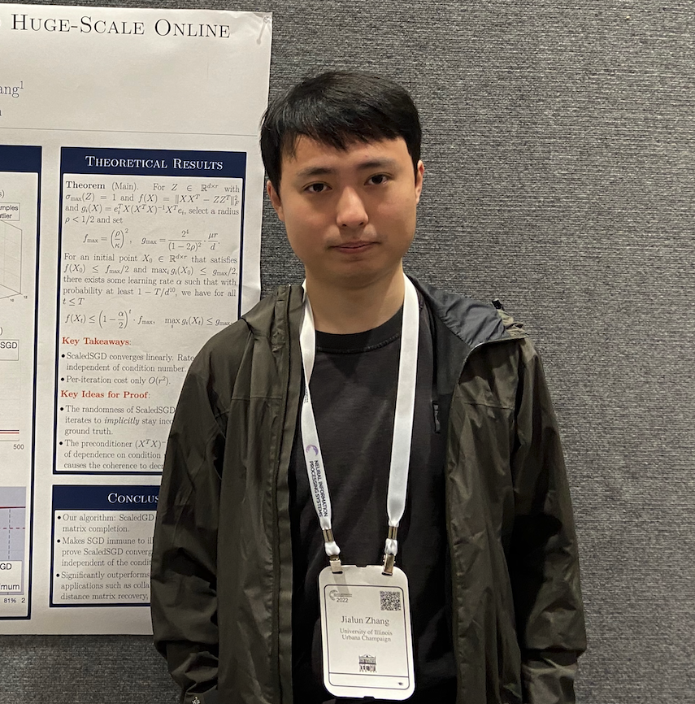

About Me
I'm a Member of Technical Staff on the pretraining team at Reflection. I'm interested in the science of scaling, with a focus on training dynamics, hyperparameter transfer, and compute-efficient optimizers. I currently work on Beam, our largest frontier open-weight model.
Previously, I was a research scientist at Meta Superintelligence Labs, where I worked on pretraining for Muse Spark 🥑 and Muse Wonder 🍉. I have also worked on the Shampoo optimizer in the AI and Systems Co-Design team.
I finished my PhD in 2024 from the ECE department at the University of Illinois at Urbana-Champaign, where I worked on preconditioned optimizers for matrix optimization. My advisor was Richard Y. Zhang.
Previously, I received a bachelor's degree in mathematics from Harvey Mudd College and a master's degree in computational mathematics from Stanford.